Table des matières
Description du produit
xPertManager est une plateforme de gestion intégrée qui optimise le fonctionnement des organisations. Elle permet entre autres :
- la gestion des ressources humaines, matérielles et financières
- la gestion de projets : conception, planification/ordonnancement, suivi et organisation des activités
- la gestion d'événements : création, planification et partage
- la gestion des communications : appels audio, messages texte, messagerie instantanée, visioconférence
- l'organisation de votes électroniques
- des outils d'organisation (tableau de bord avec matrice d'Eisenhower, notes autocollantes, rappels, etc.)
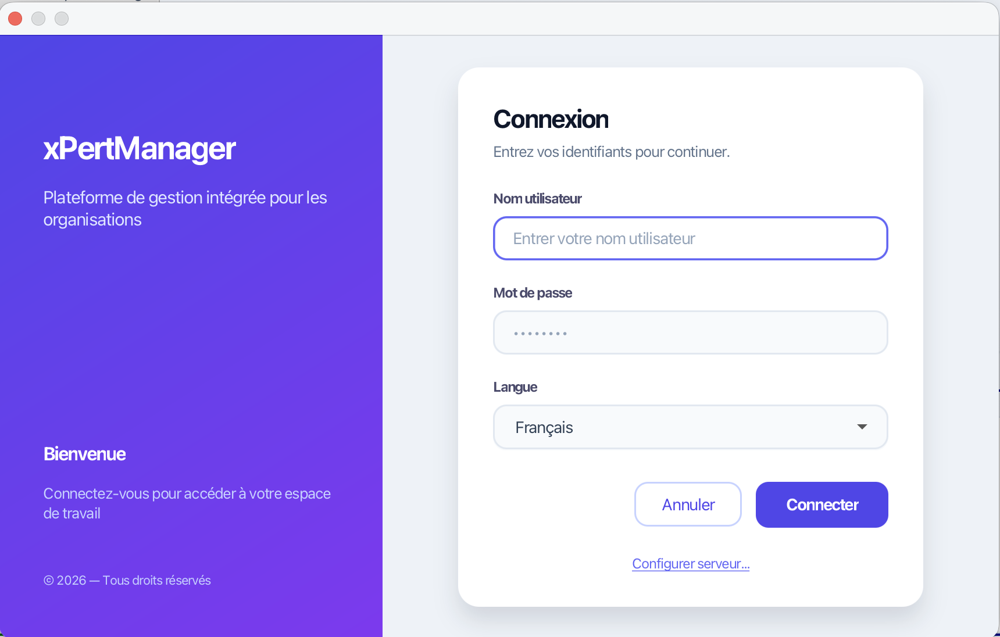
Au démarrage de l'application, l'utilisateur peut choisir sa langue de travail : le français ou l'anglais (l'extension à d'autres langues est prévue dans les versions futures).
L'interface client comprend cinq onglets :
Onglet Général
Interface de configuration générale de l'organisation :
- création de structures et sous-structures
- création et affectation d'agents aux structures
- création et affectation de ressources matérielles
- communications entre agents
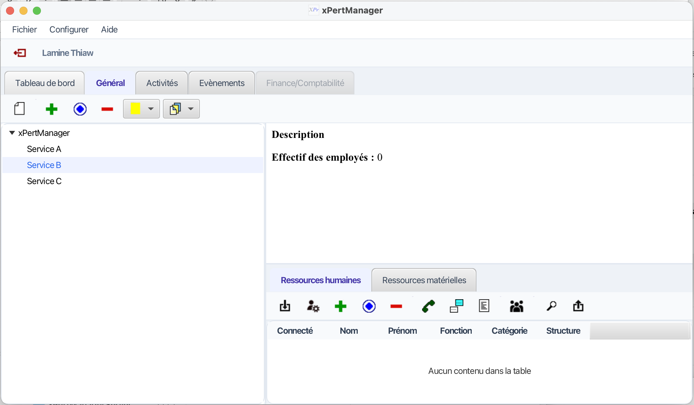
Onglet Tableau de bord
Permet à l'utilisateur de mieux s'organiser et de visualiser la priorité des tâches à faire.
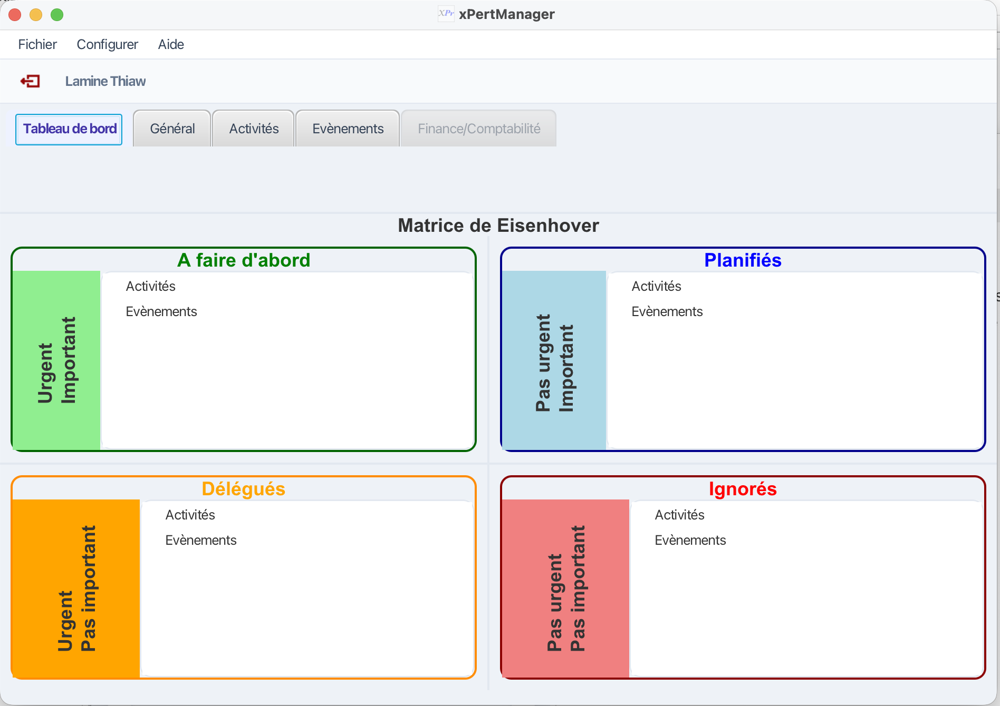
Onglet Activités
- la création de projets ou d'activités
- le partage et le traitement de projets ou d'activités
- le suivi de projets ou d'activités
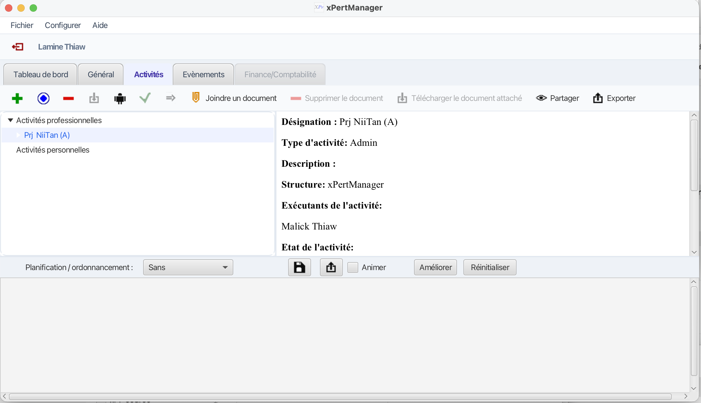
Onglet Événement
- la création d'événements
- le suivi d'événements
- le lancement d'événements tels que les visioconférences organisées sur la plateforme
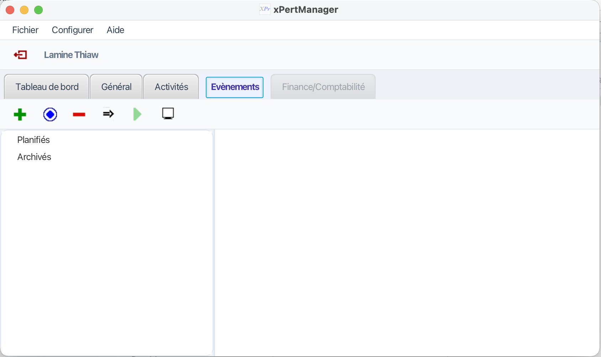
Onglet Finance/Comptabilité
Ouvre le hub Finance et comptabilité, organisé en trois groupes de modules, chacun s'ouvrant dans sa propre fenêtre :
- Ventes et achats : Clients, Fournisseurs, Commandes, Factures
- Catalogue et stock : Produits, Stocks
- Finance et paie : Trésorerie, Règlement de la paie
 ↑ Retour en haut
↑ Retour en haut
Créer et organiser des structures
Créer une structure
- Après le lancement de l'application, choisissez la langue de travail et cliquez sur le bouton Annuler.
- Dans l'onglet Général, cliquez sur le bouton .
- Dans la boîte de dialogue qui apparaît, entrez le nom de la structure et le nom de la base de données associée. Définissez également les catégories de personnel et les types d'activités en cliquant sur les boutons correspondants. Vous pouvez également remplir la zone description de la structure.
- Cliquez ensuite sur le bouton Créer.
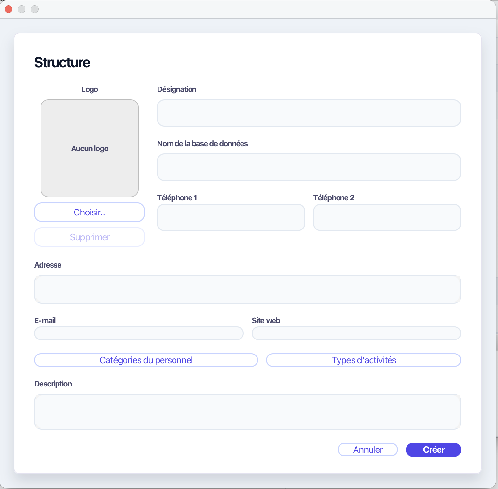
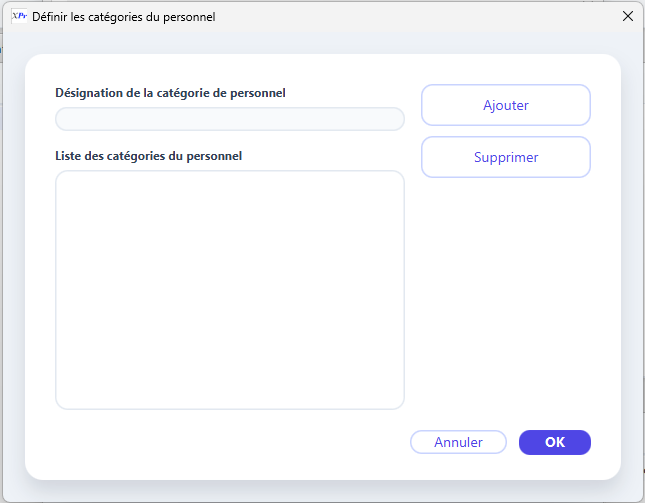
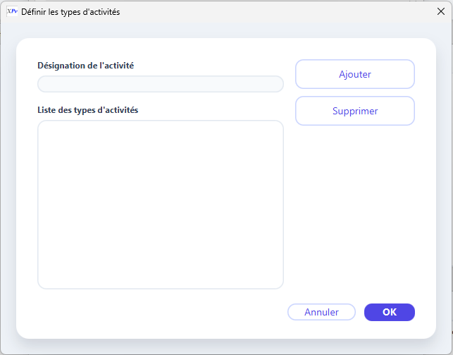
Ajouter une sous-structure
Pour ajouter une sous-structure à une structure existante :
- Sélectionnez la structure de base.
- Cliquez sur le bouton dans l'onglet Général.
- Dans la boîte de dialogue, entrez les données requises. La sélection du responsable de la nouvelle structure est optionnelle et peut être faite ultérieurement.
- Cliquez sur le bouton Créer.
- Vous pouvez continuer à créer d'autres structures ou fermer la boîte de dialogue.
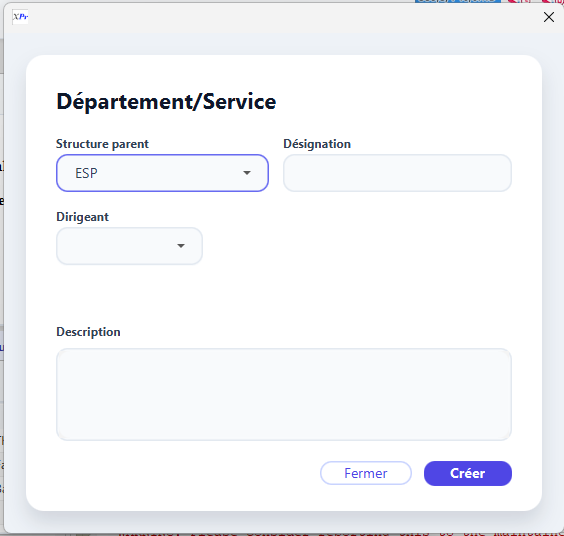
Modifier / Supprimer une structure
- Pour modifier une structure, sélectionnez-la et cliquez sur
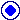
dans l'onglet Général. - Pour supprimer une structure, sélectionnez-la et cliquez sur dans l'onglet Général.
Gérer le personnel
Ajouter un agent
Pour ajouter un agent à une structure :
- Sélectionnez la structure dans l'onglet Général.
- Dans l'onglet Ressources Humaines, cliquez sur .
- Dans la boîte de dialogue, entrez les données requises.
- Cliquez sur Insérer.
- Vous pouvez continuer à ajouter d'autres agents ou fermer la boîte de dialogue.
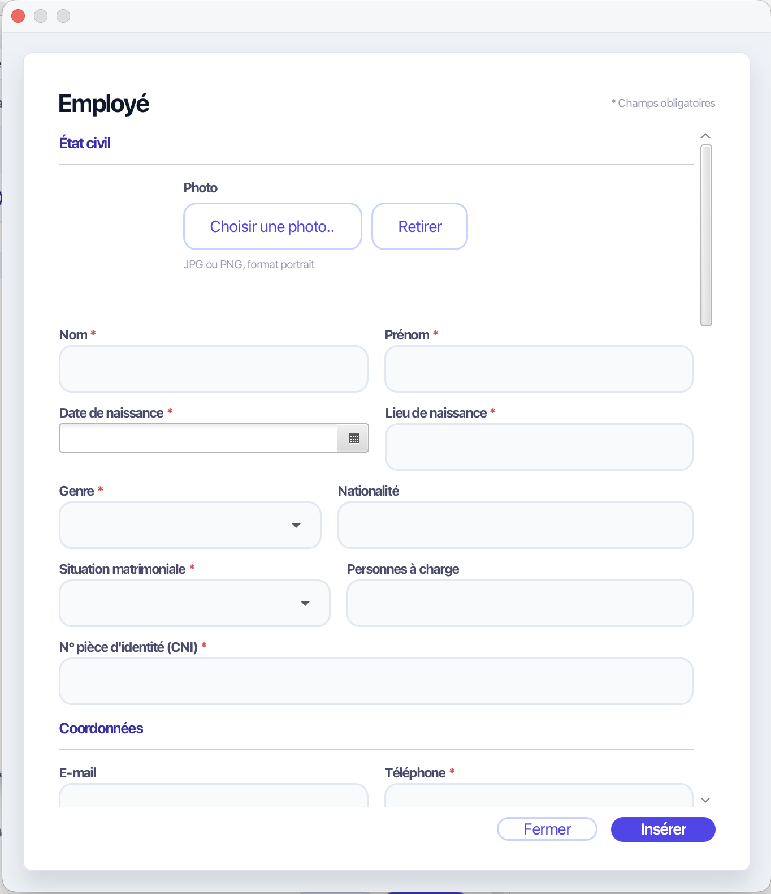
Modifier / Supprimer un agent
- Pour modifier un agent, sélectionnez-le et cliquez sur dans l'onglet Ressources Humaines.
- Pour supprimer un agent, sélectionnez-le et cliquez sur dans l'onglet Ressources Humaines.
Congés
La gestion des congés couvre deux usages : le libre-service, où chaque agent dépose et suit ses propres demandes, et le traitement RH, regroupé dans le module Gestion des ressources humaines.
Ouvrir le module Gestion des ressources humaines
Depuis l'onglet Général, sélectionnez l'onglet Ressources Humaines en bas de l'interface et cliquez sur . Le module s'ouvre dans sa propre fenêtre, organisé en trois groupes : Personnel (Répertoire des agents), Congés (Demandes de congé, Soldes de congés, Types de congé) et Paie (Bulletins de paie, Modèle de bulletin).
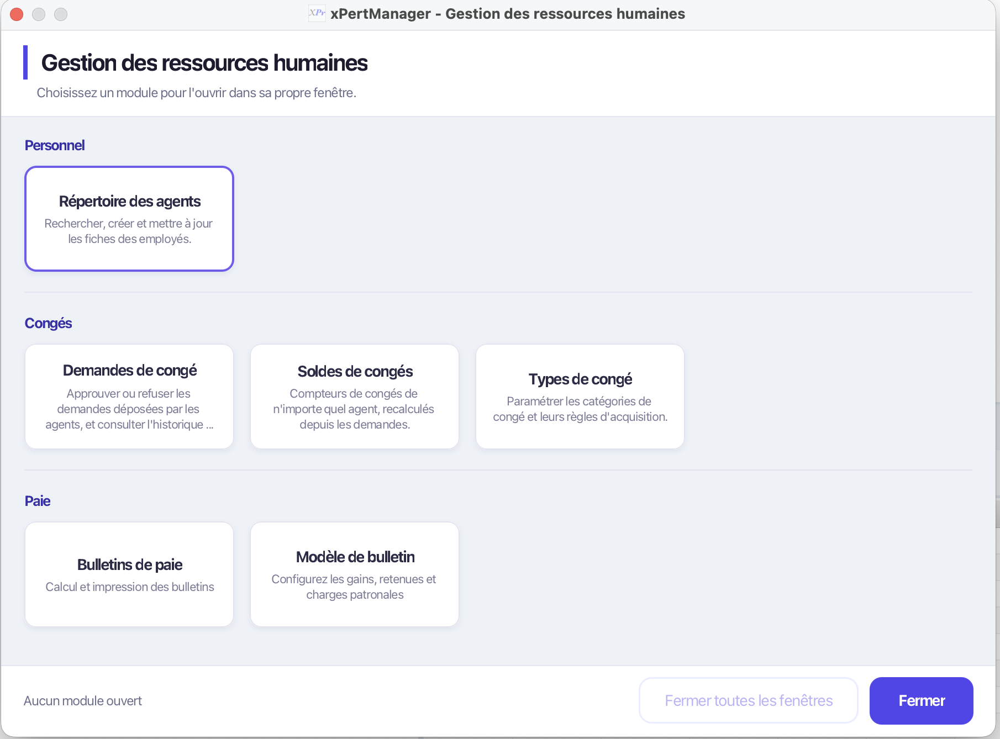
Faire une demande de congé (agent)
- Depuis le menu principal, ouvrez Mes demandes de congé. En haut de l'écran, Jours restants indique le solde disponible.
- Cliquez sur Nouvelle demande, renseignez le type de congé et les dates, puis validez.
- La demande apparaît dans le tableau (Type, Période, Jours, Statut, Déposée le, Décidée le, Décision) ; vous pouvez y suivre son traitement.
- Filtrez par Exercice ou par Statut, ou recherchez une demande précise. Sélectionnez une ligne et cliquez sur Ouvrir pour le détail.
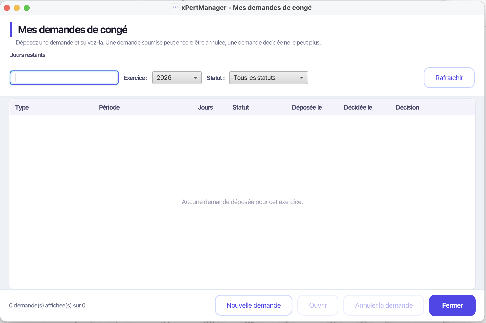
Approuver ou refuser une demande (responsable RH)
- Dans Gestion des ressources humaines, ouvrez la carte Demandes de congé.
- Filtrez par structure, agent, exercice ou statut si nécessaire, puis basculez entre les onglets En attente de décision et Historique.
- Sélectionnez une demande en attente (Agent, Type, Période, Jours, Déposée le, Motif) puis cliquez sur Approuver ou sur Refuser.
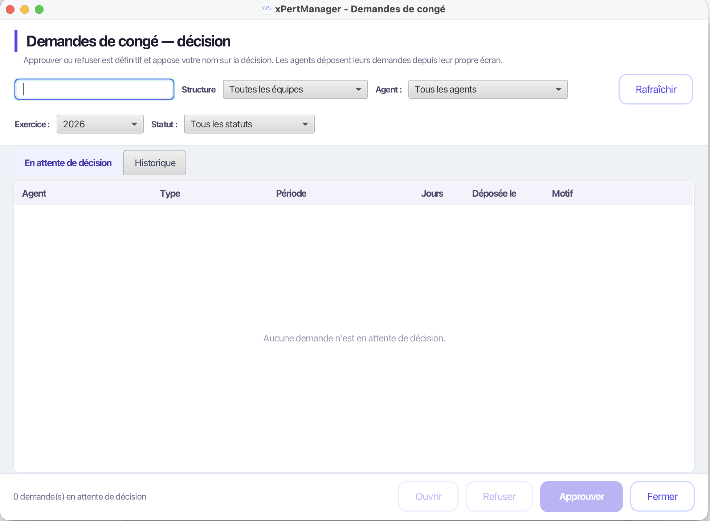
Consulter les soldes de congés
La carte Soldes de congés affiche, pour n'importe quel agent, les compteurs de congés recalculés automatiquement à partir des demandes déjà approuvées.
Configurer les types de congé
La carte Types de congé permet de paramétrer les catégories de congé disponibles (congé annuel, maladie, etc.) et leurs règles d'acquisition.
↑ Retour en hautFiches de paie
Chaque agent consulte ses propres bulletins en libre-service ; leur génération, elle, est réservée aux responsables RH et finances/comptabilité.
Consulter ses fiches de paie (agent)
- Depuis le menu principal, ouvrez Mes bulletins de paie : l'écran affiche votre nom et le nombre de bulletins disponibles.
- Filtrez la liste par année ou par statut, puis cliquez sur Actualiser.
- Sélectionnez un bulletin dans la liste (période, date d'émission, salaire brut, total des retenues, net à payer, statut) : son aperçu s'affiche dans le panneau de droite.
- Utilisez Imprimer ou Exporter PDF pour en garder une copie.
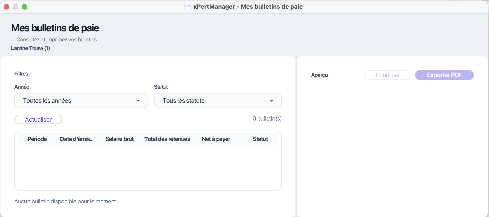
Générer une fiche de paie (responsable RH)
Dans Gestion des ressources humaines (groupe Paie), la carte Bulletins de paie — « Calcul et impression des bulletins » — ouvre l'écran Bulletin de paie (« Saisie et prévisualisation du bulletin »).
- Choisissez l'équipe puis l'agent concerné, ainsi que le mois et l'année de paie — ou reprenez un bulletin existant avec Charger depuis... — puis renseignez les dates d'émission et de paiement.
- Dans Gains, saisissez le salaire de base ; les primes et autres éléments de gain viennent s'ajouter dans la liste détaillée pour obtenir le salaire brut.
- Dans Retenues, détaillez les cotisations et autres retenues : leur somme forme le total des retenues.
- La section Résultats et coût employeur donne le salaire net ainsi que le coût total pour l'employeur.
- Une fois la saisie vérifiée, enregistrez le bulletin ; il peut ensuite être imprimé ou exporté en PDF.
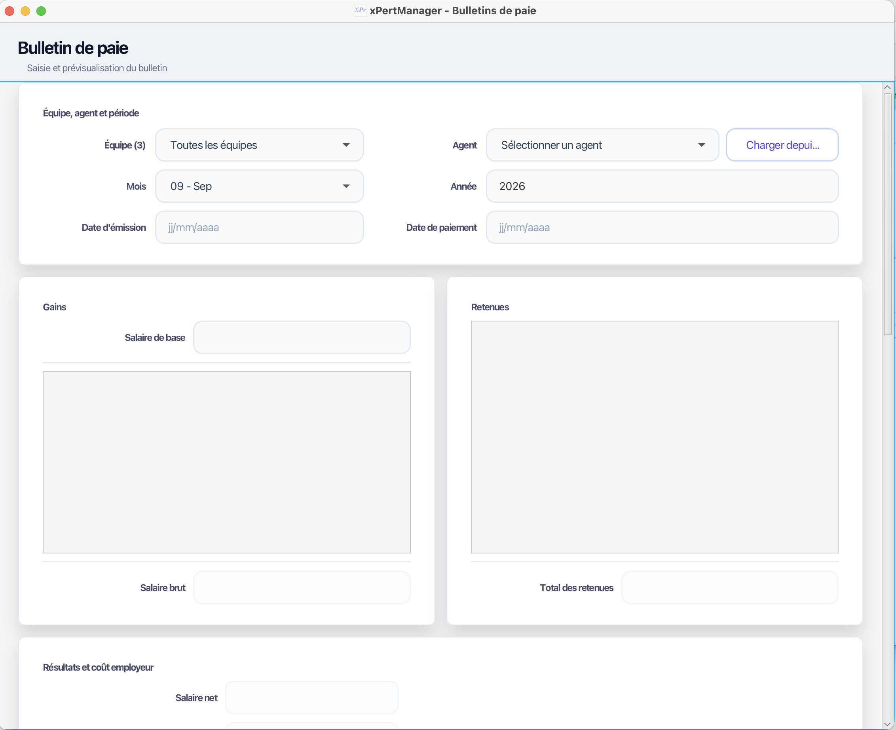
Configurer le modèle de paie (responsable RH)
La carte Modèle de bulletin — « Configurez les gains, retenues et charges patronales » — définit les rubriques proposées lors de la génération d'un nouveau bulletin (voir l'aperçu du module Gestion des ressources humaines plus haut).
Le règlement d'un bulletin déjà validé se fait de son côté dans le module Finances & Comptabilité, via la carte Règlement de la paie.
↑ Retour en hautCréer et gérer des projets ou activités
Créer un projet ou une activité
- Sélectionnez dans l'onglet Général la structure où le projet ou l'activité doit être créé.
- Dans l'onglet Activités, sélectionnez le projet ou l'activité de base. S'il n'y en a pas, sélectionnez le type (professionnel ou personnel).
- Cliquez sur .
- Dans la boîte de dialogue, remplissez les données requises. Si les types d'activités ne sont pas définis, ils doivent être paramétrés en modifiant la structure de base.
- Cliquez sur Insérer.
- Vous pouvez continuer à créer d'autres projets ou fermer la boîte de dialogue.
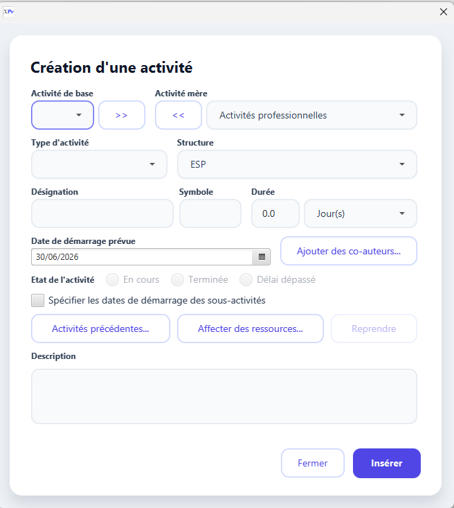
Modifier / Supprimer
- Pour modifier un projet, sélectionnez-le et cliquez sur dans l'onglet Activités.
- Pour supprimer un projet, sélectionnez-le et cliquez sur dans l'onglet Activités.
Gérer un projet ou une activité
- Ajouter des agents impliqués : Cliquez sur pour choisir le personnel participant.
- Attacher un document : Cliquez sur pour attacher un fichier au projet.
- Publier un projet : Cliquez sur
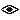
pour le rendre accessible aux collaborateurs. - Marquer comme terminé : Cliquez sur une fois terminé.
- Définir des dépendances : Utilisez l'option « Activités précédentes ».
- Attribuer des ressources : Utilisez l'option « Attribuer des ressources » pour allouer des ressources matérielles ou humaines.
- Visualisation : Affichez sous forme de diagramme de Gantt ou MPM, animez la progression et exportez les diagrammes.
Créer et organiser des événements
Créer un événement
- Sélectionnez l'onglet Événement.
- Cliquez sur le bouton .
- Dans la boîte de dialogue, entrez les informations requises. Ajoutez les agents impliqués afin qu'ils puissent voir l'événement dans leur interface. Pour ajouter un participant, cliquez sur , puis dans l'onglet Ressources Humaines, sélectionnez le participant et cliquez sur .
- Ajoutez d'autres participants en répétant la procédure, ou chargez un groupe de diffusion déjà créé .
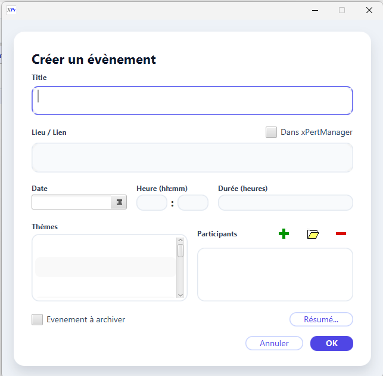
Modifier / Supprimer un événement
- Pour modifier un événement, sélectionnez-le et cliquez sur .
- Pour supprimer un événement, sélectionnez-le et cliquez sur .
Organiser une visioconférence
Visioconférence instantanée
- Dans l'onglet Événements, cliquez sur .
- Dans la fenêtre de visioconférence, ajoutez des participants en cliquant sur .
Visioconférence planifiée
- Sélectionnez l'événement dans l'onglet Événements et cliquez sur .
- Les participants connectés recevront automatiquement une invitation à rejoindre la réunion.
Dans la fenêtre de visioconférence, les boutons disponibles sont :
- Inviter un participant — sélectionnez-le dans la liste du personnel, puis cliquez sur de l'onglet Ressources humaines.
- Inviter un groupe de diffusion — chargez le fichier du groupe depuis son emplacement.
- Activer/désactiver le microphone.
- Activer/désactiver la caméra.
- Activer/désactiver le partage d'écran.
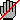
S'inscrire/se désinscrire de la liste des orateurs pour prendre la parole.- Activer/désactiver le mode d'édition des notes de réunion — les notes sont affichées en temps réel pour tous les participants. Un seul participant peut éditer à la fois.
- Lancer un vote électronique — tous les participants peuvent voter et voir les résultats.
- >> Envoyer un message texte à tous les participants.
- Quitter la visioconférence.
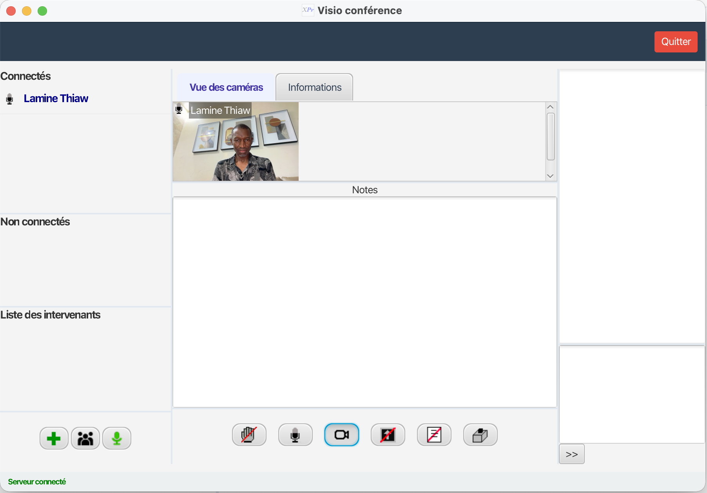
↑ Retour en hautGérer les ressources matérielles
Ajouter une ressource matérielle
- Sélectionnez l'onglet Général.
- Sélectionnez la structure où la ressource matérielle sera affectée.
- Sélectionnez l'onglet Ressources Matérielles en bas de l'interface.
- Cliquez sur le bouton .
- Dans la boîte de dialogue, remplissez les informations requises et définissez les catégories si nécessaire.
- Cliquez sur Ajouter.
- Vous pouvez continuer à ajouter d'autres ressources ou fermer la boîte de dialogue.
Modifier / Supprimer une ressource matérielle
- Pour modifier, sélectionnez la ressource dans l'onglet Ressources Matérielles et cliquez sur .
- Pour supprimer, sélectionnez la ressource et cliquez sur .
Planifier une ressource matérielle
La planification des ressources matérielles se fait dans la section Gérer un projet ou une activité.
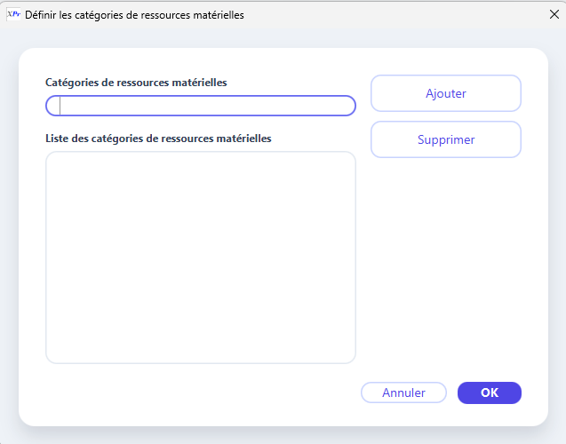
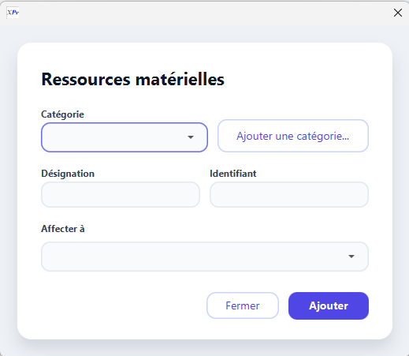
Finances & Comptabilité
Le hub Finance et comptabilité, ouvert depuis l'onglet Finance/Comptabilité, regroupe les modules en trois familles : Ventes et achats (Clients, Fournisseurs, Commandes, Factures), Catalogue et stock (Produits, Stocks) et Finance et paie (Trésorerie, Règlement de la paie). Chaque carte ouvre son module dans sa propre fenêtre.
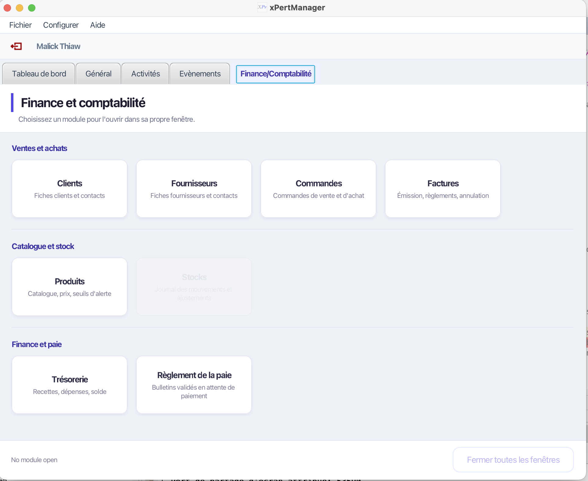
Gérer les clients et les fournisseurs
- Ouvrez la carte Clients (« Fiches clients et contacts ») ou Fournisseurs (« Fiches fournisseurs et contacts »).
- Cliquez sur Nouveau client (ou Nouveau fournisseur) et renseignez le code, le nom ou la raison sociale, le type de client le cas échéant, le téléphone, l'e-mail, l'adresse et le statut actif.
- Cliquez sur Enregistrer.
- Recherchez ou filtrez par type, ou cochez Actifs uniquement.
- Sélectionnez une fiche existante pour la modifier ou la Supprimer ; Effacer vide le formulaire.
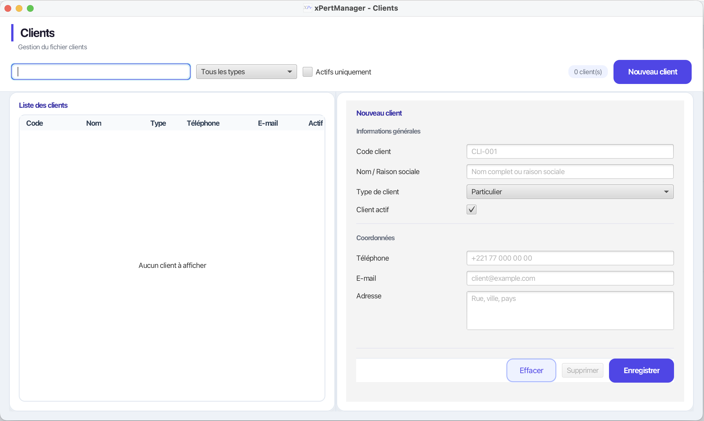
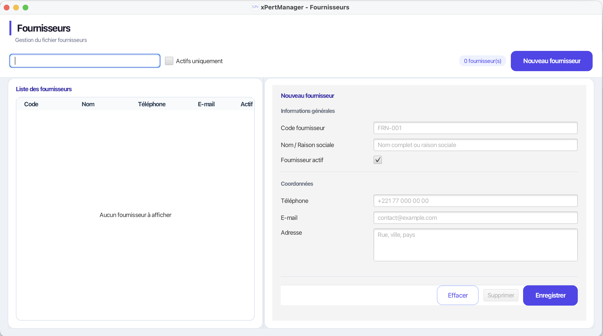
Suivre les commandes et les factures
La carte Commandes (« Commandes de vente et d'achat ») liste les commandes passées auprès des clients et des fournisseurs :
- Créez une Nouvelle commande de vente ou une Nouvelle commande d'achat, filtrez par type ou par statut.
- Sélectionnez une commande pour l'Ouvrir, la Valider, la Marquer livrée ou l'Annuler.
- Une fois la commande validée, Générer la facture crée la facture correspondante.
La carte Factures (« Émission, règlements, annulation ») permet ensuite de suivre chaque facture :
- Les informations de la facture (numéro, type, commande liée, dates de facture et d'échéance, statut) ainsi que ses montants (HT, TVA, TTC, payé, reste à payer) sont affichés dans le panneau de droite.
- Saisissez un Montant du règlement puis cliquez sur Enregistrer le paiement ; une facture peut aussi être annulée avec Annuler la facture.
- Utilisez Exporter en PDF ou Imprimer pour obtenir le document.
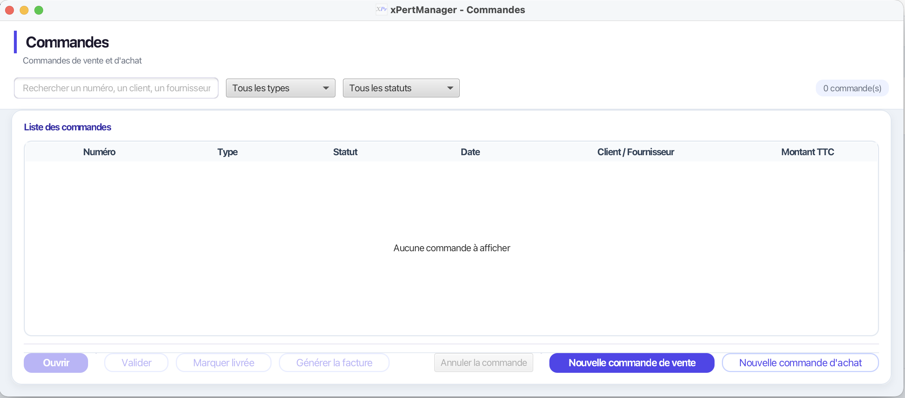
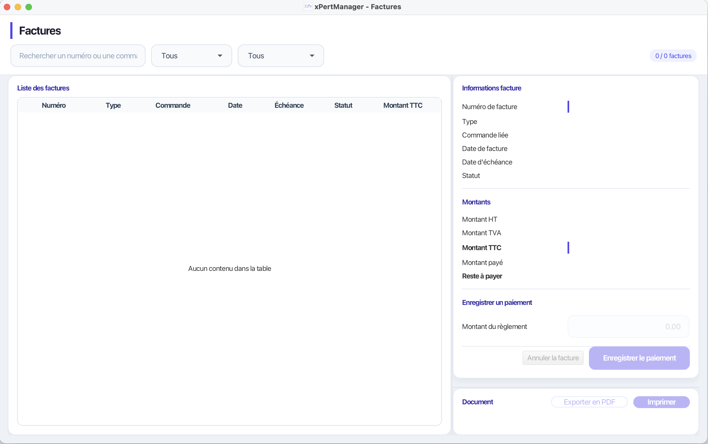
Gérer le catalogue produits et le stock
- Ouvrez la carte Produits (« Catalogue, prix, seuils d'alerte ») et cliquez sur Nouveau produit.
- Renseignez les prix d'achat et de vente hors taxe, ainsi que le taux de taxe : le prix de vente toutes taxes comprises et la marge sont calculés automatiquement.
- Renseignez la quantité en stock et le seuil d'alerte ; un badge stock faible apparaît automatiquement lorsque le seuil est atteint.
- Cliquez sur Enregistrer.
Le journal des entrées et sorties de stock se consulte dans la carte Stocks (« Journal des mouvements et ajustements »).
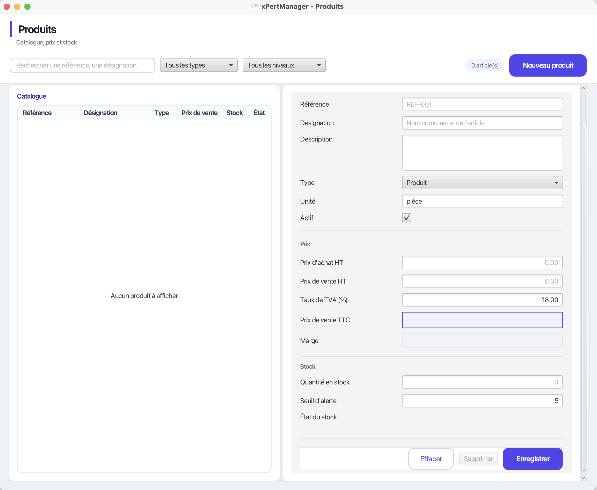
Enregistrer une dépense ou une recette
- Ouvrez la carte Trésorerie et cliquez sur Nouvelle écriture.
- Choisissez le type (dépense ou recette), une catégorie, un libellé, un montant et, si besoin, une note.
- Validez : l'écriture apparaît dans le tableau et est aussitôt prise en compte dans les indicateurs et les graphiques.
Catégories de dépenses : loyer, électricité, eau, télécom, fournitures, transport, assurance, entretien, impôts et taxes, salaires, achats, autres. Catégories de recettes : ventes, subventions, intérêts, remboursements, autres.
- Une écriture existante peut être modifiée ou supprimée depuis le tableau.
- Générer un rapport exporte la période affichée.
Suivre la trésorerie
- Choisissez la période à analyser (mois et année de début, mois et année de fin) puis cliquez sur Actualiser.
- Les indicateurs clés — Total recettes, Total dépenses, Solde, Taux de marge — se mettent à jour en tête d'écran.
- Le graphique Évolution mensuelle de la trésorerie retrace recettes et dépenses mois par mois ; les camemberts Répartition des dépenses et Répartition des recettes détaillent chacun par catégorie, avec un tableau Détail par catégorie (Catégorie, Type, Montant) en dessous.
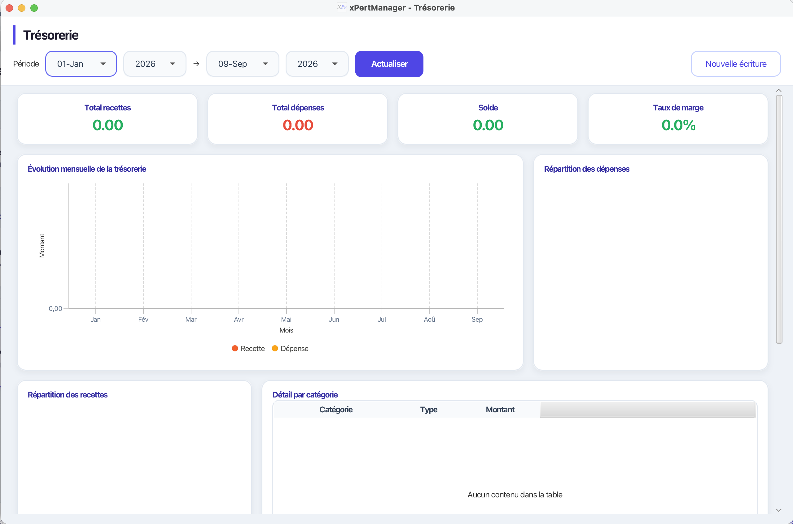
Régler une fiche de paie (responsable finances/comptabilité)
La carte Règlement de la paie (« Bulletins validés en attente de paiement ») liste les bulletins déjà validés par le responsable RH et permet d'enregistrer leur règlement (mode de paiement, statut, observations) — voir aussi la section Fiches de paie.
↑ Retour en hautAppels audio, messages texte et messagerie instantanée
Passer un appel audio
- Sélectionnez l'onglet Général.
- Sélectionnez l'onglet Ressources Humaines en bas de l'interface.
- Sélectionnez l'agent que vous souhaitez appeler (doit être en ligne).
- Cliquez sur le bouton
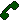
.
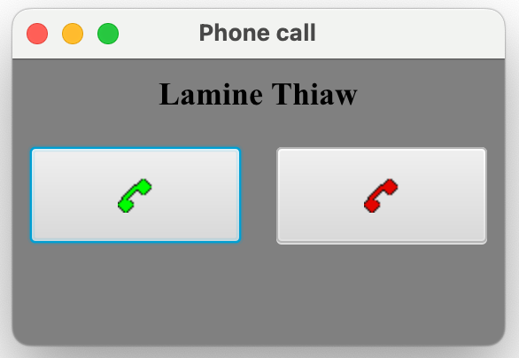
Envoyer un message texte
- Sélectionnez l'onglet Général.
- Sélectionnez l'onglet Ressources Humaines en bas de l'interface.
- Sélectionnez l'agent destinataire (même s'il est hors ligne).
- Cliquez sur le bouton .
- Rédigez le message et cliquez sur Envoyer. Si le destinataire est en ligne, il le verra immédiatement ; sinon, il le verra lors de sa connexion. Il est possible d'envoyer un message à un groupe de destinataires .
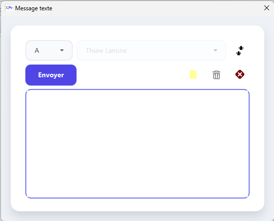
Démarrer un chat de messagerie instantanée
- Sélectionnez l'onglet Général.
- Sélectionnez l'onglet Ressources Humaines en bas de l'interface.
- Sélectionnez l'agent avec qui vous souhaitez chatter (doit être en ligne).
- Cliquez sur le bouton
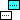
.
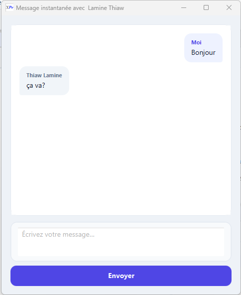
↑ Retour en hautVotes électroniques
Le vote électronique est intégré à un événement. Il peut être planifié ou effectué instantanément. Pour organiser un vote électronique :
- Lancez l'événement associé.
- Cliquez sur le bouton .
- Entrez le libellé du vote dans la boîte de dialogue qui apparaît et cliquez sur OK.
- Créez et ajoutez les options de vote.
- Spécifiez l'heure de fin du vote.
- Cliquez sur Démarrer pour lancer le vote. Les options apparaîtront dans les interfaces de tous les participants afin qu'ils puissent voter.
- À la fin du vote, cliquez sur Arrêter. Les résultats apparaîtront dans les interfaces de tous les participants.
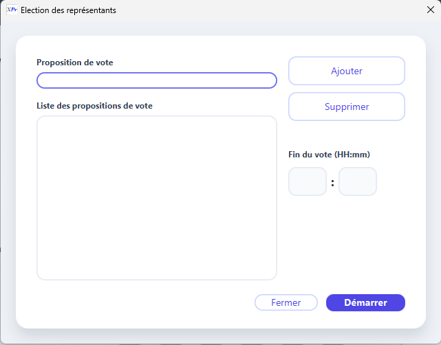
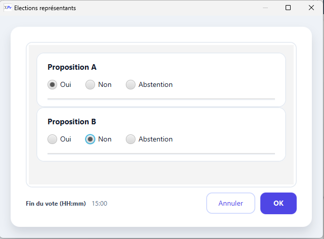
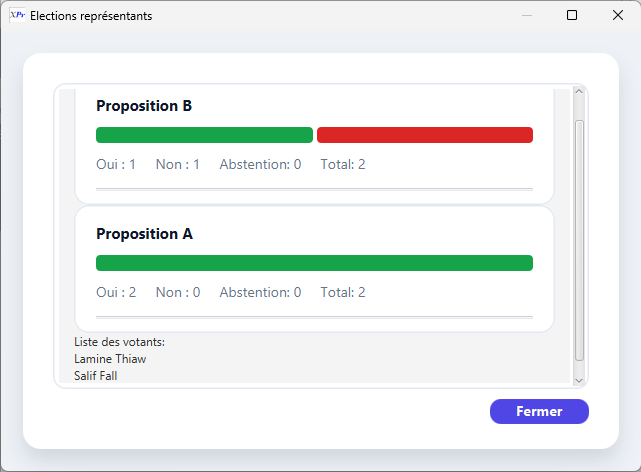
Divers : Matrice d'Eisenhower, notes autocollantes, groupes de diffusion
Matrice d'Eisenhower
La matrice d'Eisenhower est intégrée au tableau de bord. Elle permet à l'utilisateur d'avoir une vision claire de :
- Tâches importantes et urgentes — à faire immédiatement
- Tâches importantes mais non urgentes — à planifier
- Tâches non importantes mais urgentes — à déléguer
- Tâches non importantes et non urgentes — peuvent être ignorées
Les activités ou événements créés ou reçus sont automatiquement intégrés dans la matrice — dans la zone Tâches importantes et urgentes si l'échéance est proche, sinon dans Tâches importantes mais non urgentes. L'utilisateur peut réattribuer les priorités depuis les onglets Activités et Événements en sélectionnant un élément et en cliquant sur .
Créer des notes autocollantes
- Dans l'onglet Général, cliquez sur le bouton et choisissez Editer....
- Dans la boîte de dialogue, cliquez sur Ajouter pour créer une note autocollante.
- Vous pouvez continuer à créer d'autres notes ou fermer la boîte de dialogue.
Afficher les notes autocollantes
- Cliquez sur le bouton et choisissez Afficher/Masquer.
- Les notes apparaîtront et défileront les unes après les autres.
- Pour fermer la fenêtre, cliquez sur dans la fenêtre ou cliquez sur , puis sur Afficher/Masquer.
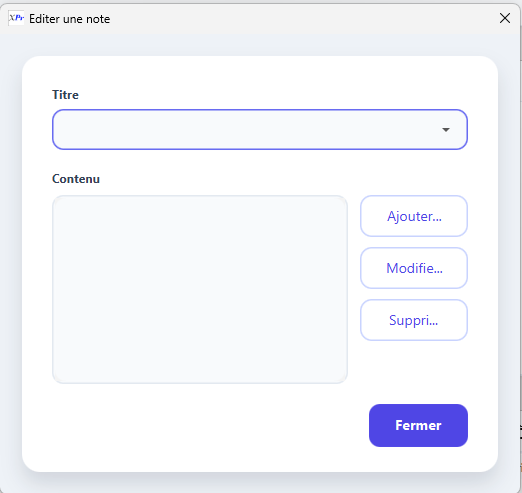
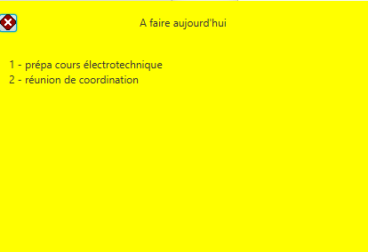
Créer des groupes de diffusion
- Sélectionnez l'onglet Général.
- Sélectionnez l'onglet Ressources Humaines en bas de l'interface.
- Cliquez sur le bouton .
- Dans la boîte de dialogue, entrez le nom du groupe et ajoutez des membres.
- Sauvegardez le groupe dans un fichier pour une utilisation future.
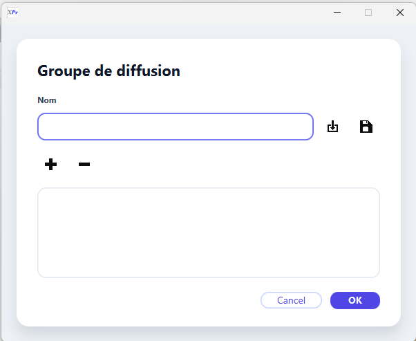
↑ Retour en haut